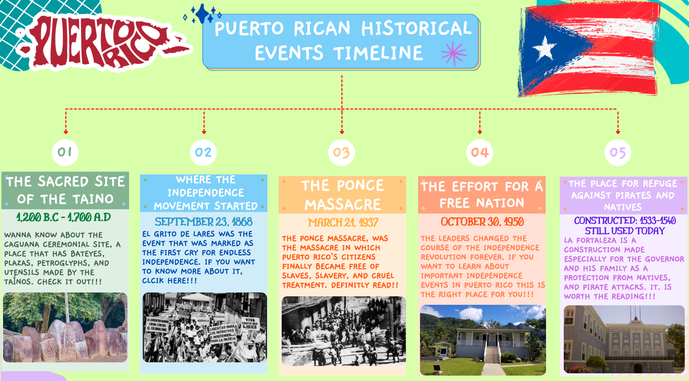

Puerto Rico's Top 5 Historical Highlights
1. The Sacred Site of the Taino
2. The Massacre that Unleashed the Cry of the Endless Independence
3. The Place Were the Unbelievable Ended
4. The Effort for a Free Nation
5. What Was a Protection Against the Savages, Now is a Cultural Heritage

Back to home page